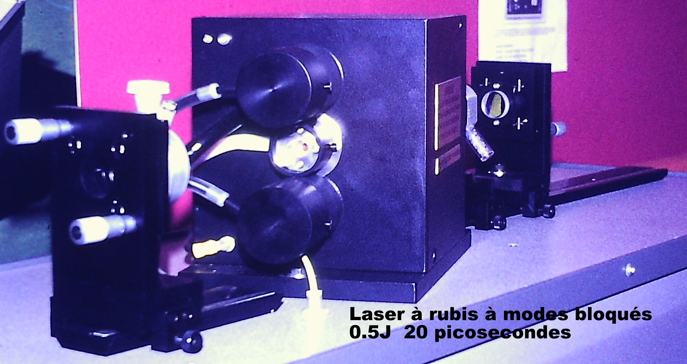
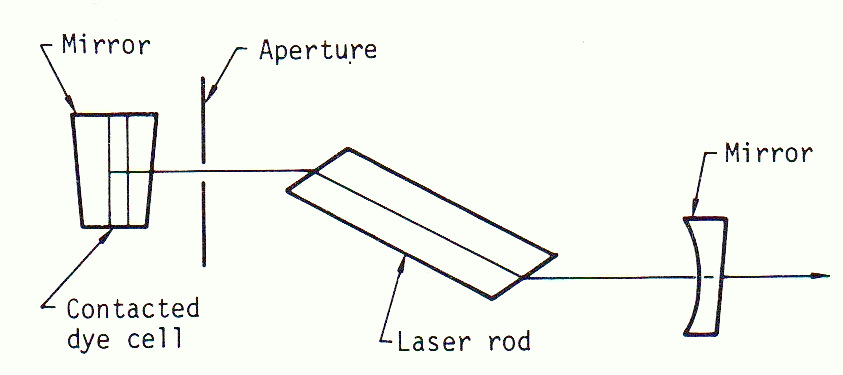
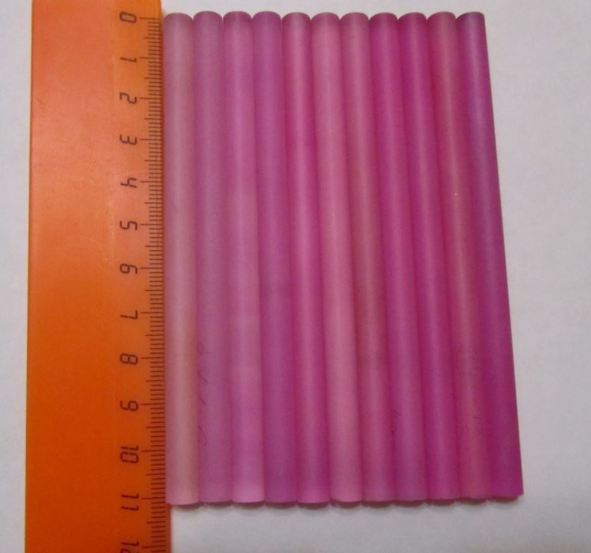
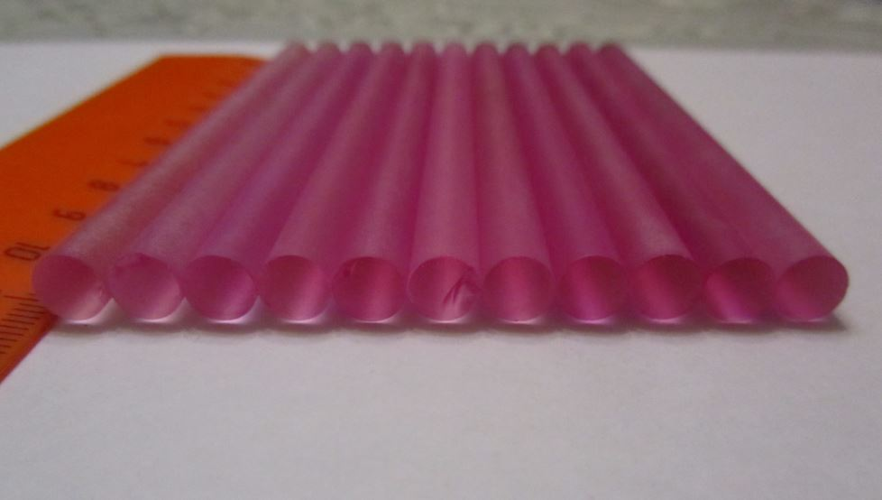

The ruby laser can work in relaxed mode with a pulse duration of about 2ms, in Q-switch mode with a Pockel cell allowing to obtain a pulse of 10ns and in mode. blocked producing a train of pulses of about 20ps!
To work in blocked mode with a saturable dye such as "malachite green" it is necessary to create a resonant cavity between the rear mirror Rmax and the exit mirror. Between these two mirrors, there must not be optical surfaces that can create a parasitic resistor (Fabry-Perot) that will favor a single wavelength producing a long-lasting pulse.
The minimum pulse duration is defined by the fluorescence width of the ruby which is 11cm -1 or 0.53nm.

All optical elements that are traversed by the laser beam must not present a possibility of creating a Fabry-Perot re-emitter! The mirrors feature either the back side angled a few degrees or unpolished. The absorbable dye cell is directly in contact with the reflective face of the wholly reflective mirror.
It is necessary to favor fundamental transversal mode TEM00 with a diaphragm.
Calculation of the number of longitudinal modes possible with a 1 meter raster and a ruby diam 7mm x 45mm to 0.035% Cr+3.



To begin the construction of this laser I obtained by a friend 13 bars of synthetic ruby doped with 0.035% Cr2O3
having broken faces which does not pose any problem because I'm going to carve them at Brewster's corner (60° 37') so as to form a parasitic raster!